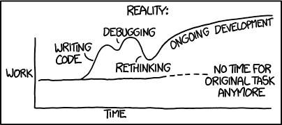
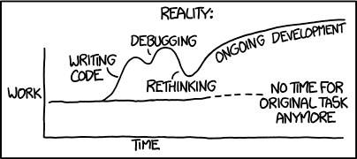
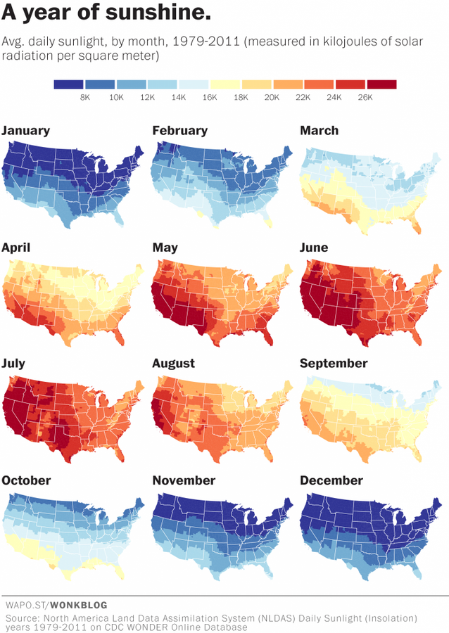
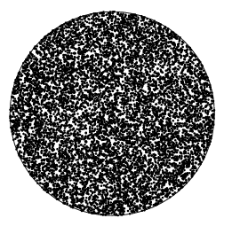
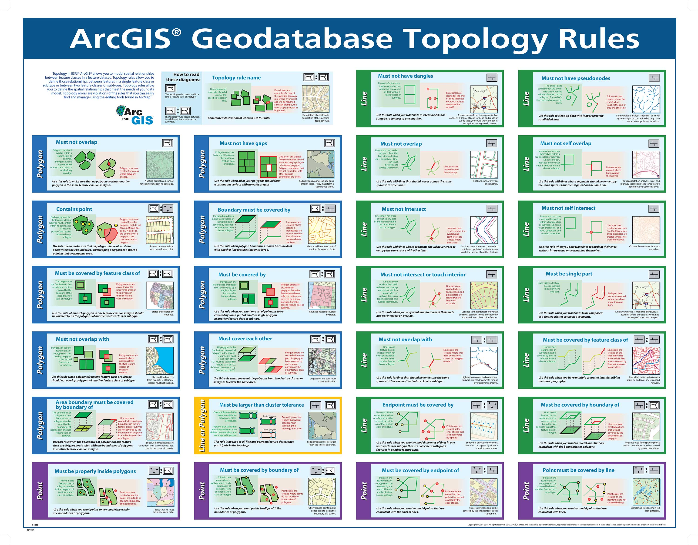
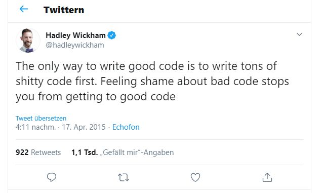

Zeitplan
| Uhrzeit | ΔT | Thema |
|---|---|---|
| 13.00 - 13.35 | 35 | Einführung Programmieren I - III |
| 13.35 - 13.45 | 10 | Einführung Übungen |
| 13.50 - 14.35 | 45 | Aufgabe 1 & 2* |
| 14.50 - 15.35 | 45 | Aufgabe 2 & 3* |
| 15.50 - 16.25 | 45 | Aufgabe 4 & 5* |
Lernziele
- Sie sind in der Lage die Vorteile von Coden / Skripten versus "Point-and-Klick" zu erläutern
- Sie kennen die Programmiersprachen für Einsteiger im Kontext von GIS und DataScience relevant sind
- Sie kennen die erste grosse Einstiegshürde
- Sie haben Lust Programmieren zu lernen
Themen
- Programmieren: Eine notwendige Expertise?
- 7 Gründe, warum ich gerne programmiere
- Die Qual der Wahl
- Programmierumgebung einrichten
Everybody in this country should learn how to program a computer... because it teaches you how to think
Ich ♥ Programmieren, weil ich damit:
- repetitive Tasks automatisieren kann
- übertragbare Tools bauen kann
- mehr Flexibilität und Power habe
- zu Grunde liegende Funktionen besser verstehe
- bessere Möglichkeiten habe zu Kollaborieren
- bessere Möglichkeiten habe, Hilfe zu erhalten
- reproduzierbar arbeiten kann
Automatisierung repetitiver Tasks
import mapmaker
mapmaker.make_map(Neutoeter)

import mapmaker
all_birds = [Neutoeter, Ringdrossel, Turmfalke, Mittelspecht, Turteltaube, Rauchschwalbe]
for bird in all_birds:
mapmaker.make_map(bird)


Achtung!
- Automatisierung bringt Zeitersparnis wenn die Tasks
- repetitiv sind
- sehr häufig ausgeführt werden müssen
- Bei vielen Tasks wird die Zeiterparnis überschätzt
 

Übertragbarkeit von Lösungen



Flexibilität / Power
Beispiel: Zufällige Punkte in einem Umkreis verteilen



Verständnis der zu Grunde liegenden Funktionen



Kollaborationsmöglichkeit
- Programmieren basiert auf einfachen Textfiles
- Dies ermöglicht ein hohes Grad an Kollaboration
- So können gigantische OpenSource Projekte mit tausenden von Beiträgern realisiert werden
- GUIs basieren auf komplexen, unzugänglichen Dateien (z.B. xlsx,docx, mxd, aprx)
- Versionierung / Kollaboration ist schwierig bis unmöglich
Hilfe erhalten
- Minimal Working Example
- Beispiel Stackoverflow
- > 5’000 Fragen pro Tag1
- > 90% Antwortrate2
- < 10 Minuten Wartezeit2
Reproduzierbarkeit
- siehe Reproducibility Crisis
- Reproduzierbarkeit bei GUI-Anwendungen kaum gegeben
Programming Languages for Data Scientists
Kaggle Umfrage 2021
- Welche Python Version?
- Welche Entwicklungsumgebung ("IDE")?
- Welche Module?
- Welcher Package Manager?


Bild: canadianliving.com
Showcases
Quelle: tucsonweekly.com


Code auf Github verfügbar
Code auf Github verfübar
Diese Tools:
- gelten als bestpractice und state of the art
- sind alle "Free and Open Source"
- werden aktiv weiter entwickelt
- werden von einer grossen Community genutzt und unterstützt (stackoverflow/github)
Was heisst das für euch?
- Wir verlassen die ESRI / ArcGIS Welt
- Wir lernen eine neue IDE kennen (JupyterLab)
- Wir lernen einen "packagemanager" kennen (Conda)
Anzahl Fragen auf Stackoverflow zum jeweiligen Thema
Quelle: stackoverflow.com | Abgerufen am 22.09.2020
Tipp von einem Grossmeister
Zusammenfassung
- CodingLiteracy: Programmieren wird für alle immer wichtiger
- Ein Programmieransatz hat gegenüber den GUI Ansatz viele Vorteile
- R und Python sind eine gute Wahl für Einsteiger
- R und Python sind eine gute Wahl im Bereich GIS / DataScience